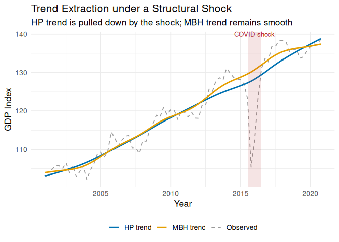

MacroFilters is a unified, high-performance library for extracting trend and cycle components from macroeconomic time series. It combines classical filters (Hodrick-Prescott, Hamilton, Boosted HP) with its flagship algorithm, the MacroBoost Hybrid (MBH) — a gradient-boosting filter with Huber loss that is immune to structural shocks such as COVID-19, financial crises, and wars.
Why MacroFilters instead of mFilter or neverhpfilter?
-
Speed: The HP filter uses sparse-matrix Cholesky factorisation (
Matrix), scaling as O(n) instead of the dense O(n³) used by most implementations. -
Robustness:
mbh_filter()replaces squared-error loss with Huber loss, so a single extreme quarter can never distort years of estimated trend. -
Input agnosticism: Pass a plain
numericvector, ats, anxts, or azooobject — the output always matches the input class, with no manual coercion required.
Quick Start
Simulating a series with a COVID-19 shock
library(MacroFilters)
#> Registered S3 method overwritten by 'quantmod':
#> method from
#> as.zoo.data.frame zoo
set.seed(42)
n <- 80 # ~20 years of quarterly data
time <- 1:n
# Long-run trend + business-cycle noise
y_true <- 100 + 0.5 * time + 3 * sin(2 * pi * time / 16)
y <- y_true + rnorm(n, sd = 1.2)
# Inject a sharp COVID-like contraction in period 60
y[60] <- y[60] - 22
y[61] <- y[61] - 15
y[62] <- y[62] - 6
gdp_ts <- ts(y, start = c(2001, 1), frequency = 4)Extracting the trend with HP and MBH
hp_result <- hp_filter(gdp_ts)
mbh_result <- mbh_filter(gdp_ts)
hp_result # print S3 summary
#> -- MacroFilter [HP] --
#> Observations : 80
#> Parameters : lambda = 1600
#> Cycle range : [-22.44, 5.885] sd = 4.043
#> Compute time : 0.013 s
mbh_result
#> -- MacroFilter [MBH] --
#> Observations : 80
#> Parameters : knots = 40, d = 2.021, mstop = 500, nu = 0.2
#> Cycle range : [-24.82, 4.681] sd = 4.084
#> Compute time : 0.054 sVisualising the comparison
library(ggplot2)
quarters <- time(gdp_ts)
df <- data.frame(
time = as.numeric(quarters),
data = as.numeric(gdp_ts),
HP = as.numeric(hp_result$trend),
MBH = as.numeric(mbh_result$trend)
)
ggplot(df, aes(x = time)) +
geom_line(aes(y = data, colour = "Observed"), linewidth = 0.6, linetype = "dashed") +
geom_line(aes(y = HP, colour = "HP trend"), linewidth = 1.0) +
geom_line(aes(y = MBH, colour = "MBH trend"), linewidth = 1.0) +
annotate("rect",
xmin = df$time[59], xmax = df$time[63],
ymin = -Inf, ymax = Inf,
alpha = 0.12, fill = "firebrick") +
annotate("text",
x = df$time[61], y = max(df$data),
label = "COVID shock", vjust = -0.5,
size = 3.5, colour = "firebrick") +
scale_colour_manual(
values = c("Observed" = "grey60", "HP trend" = "#0072B2", "MBH trend" = "#E69F00")
) +
labs(
title = "Trend Extraction under a Structural Shock",
subtitle = "HP trend is pulled down by the shock; MBH trend remains smooth",
x = "Year", y = "GDP Index", colour = NULL
) +
theme_minimal(base_size = 13) +
theme(legend.position = "bottom")
The HP trend dips noticeably during the shock window, treating the extreme quarters as meaningful information about the long-run level. The MBH trend glides through undisturbed — the Huber loss down-weights those observations automatically.
The Filter Arsenal
| Function | Method | Key Advantage |
|---|---|---|
hp_filter() |
Hodrick-Prescott (1997) | Sparse O(n) implementation |
hamilton_filter() |
Hamilton (2018) | OLS regression, no spurious cycles |
bhp_filter() |
Boosted HP — Phillips & Shi (2021) | Iterative fitting with BIC/ADF stopping |
mbh_filter() |
MacroBoost Hybrid | Robust to outliers via Huber loss |
All functions return a macrofilter S3 object. Access components with $trend, $cycle, and $meta.
Further Reading
See vignette("introduction", package = "MacroFilters") for a full walkthrough covering input agnosticism, all four filters, and the S3 print/meta interface.